149 kişi · 65 üniversite
Akademisyenler
İslam Mezhepleri Tarihi alanındaki öğretim elemanları, araştırmacılar ve rahmetle andığımız hocalarımız. Tashih ve eklemelerinizi bekliyoruz.
149 kayıt
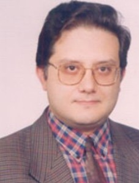
Prof. Dr.
A. Bülent Ünal
Dokuz Eylül Üniversitesi · 3 eser
Dr. Öğr. Üyesi
Abdullah Ömer Yavuz
Erciyes Üniversitesi
Dr.
Abdylkader Durguti
Muş Alparslan Üniversitesi
Doç. Dr.
Adem Arıkan
İstanbul Üniversitesi
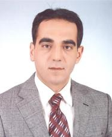
Dr. Öğr. Üyesi
Adem Lök
Muş Alparslan Üniversitesi
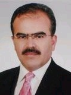
Prof. Dr.
Ahmet Ak
Kahramanmaraş Sütçü İmam Üniversitesi · 3 eser
Dr. Öğr. Üyesi
Ahmet Ateşyürek
Amasya Üniversitesi
Prof. Dr.
Ahmet Bağlıoğlu
Dokuz Eylül Üniversitesi · 1 eser
Dr.
Ahmet Bedri Yavuz
Zonguldak Üniversitesi
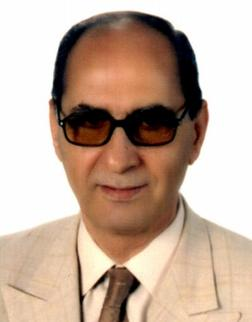
Prof. Dr.
Ahmet Turan
Ondokuz Mayıs Üniversitesi · 7 eser
Yrd. Doç. Dr.
Ahmet Vehbi Ecer
Erciyes Üniversitesi · 1 eser
Doç. Dr.
Ahmet Yalçın
Kayseri Üniversitesi
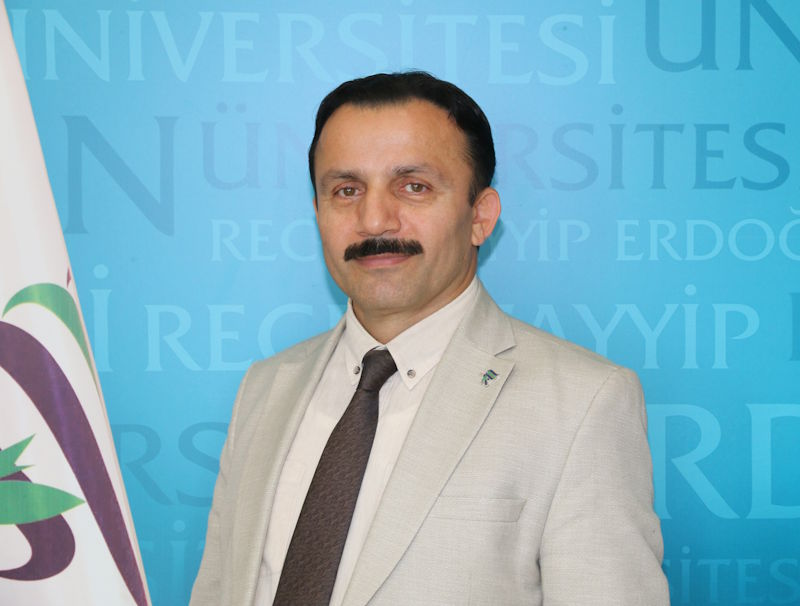
Prof. Dr.
Ahmet İshak Demir
Recep Tayyip Erdoğan Üniversitesi · 5 eser
Prof. Dr.
Ali Avcu
Ankara Sosyal Bilimler Üniversitesi · 3 eser
Dr. Öğr. Üyesi
Ali Durmuş
Bartın Üniversitesi
Dr. Öğr. Üyesi
Ali Osman Balcı
Aydın Adnan Menderes Üniversitesi
Dr.
Ali Rıza Akgün
Karabük Üniversitesi
Arş. Gör.
Ali Satılmış
Kocaeli Üniversitesi
Arş. Gör.
Amine Çelik
İstanbul Üniversitesi
Doç. Dr.
Asiye Tığlı
Uludağ Üniversitei
Prof. Dr.
Avni İlhan
Dokuz Eylül Üniversitesi · 6 eser
Doç. Dr.
Aydın Bayram
Artvin Çoruh Üniversitesi
Doç. Dr.
Ayhan Işık
Karabük Üniversitesi
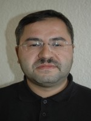
Doç. Dr.
Aytekin Şenzeybek
Necmettin Erbakan Üniversitesi · 2 eser
Arş. Gör.
Ayşe Gül Öz
Akdeniz Üniversitesi
Arş. Gör.
Azmi Bayer
Erciyes Üniversitesi
Dr. Öğr. Üyesi
Bekir Altun
Kırklareli Üniversitesi
Dr. Öğr. Üyesi
Betül Yurtalan
Ankara Üniversitesi

Prof. Dr.
Cemil Hakyemez
Trabzon Üniversitesi · 4 eser
Prof. Dr.
Cenksu Üçer
Ankara Yıldırım Beyazıt Üniversitesi · 2 eser
Arş. Gör.
Coşkun Borsbuğa
Harran Üniversitesi
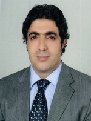
Prof. Dr.
Doğan Kaplan
Necmettin Erbakan Üniversitesi · 3 eser
Dr. Öğr. Üyesi
Ebru Koçak
Burdur Üniversitesi
Dr.
Edip Yılmaz
Gaziantep Üniversitesi
Arş. Gör.
Elif Oğuz
Bayburt Üniversitesi
Yüksek Lisans Öğrencisi
Emre Karayumak
—
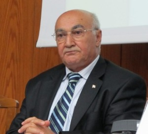
Prof. Dr.
Ethem Ruhi Fığlalı
Ankara, Dokuz Eylül ve Muğla Üniversitesi · 13 eser
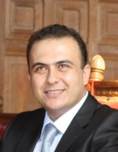
Doç. Dr.
Fatih Topaloğlu
Pamukkale Üniversitesi · 6 eser
Doç. Dr.
Fatmanur Alibekiroğlu Eren
Çukurova Üniversitesi
Doktora Öğrencisi
Fatıma Nur Demir
Ankara Üniversitesi
Prof. Dr.
Fevzi Rençber
Şırnak Üniversitesi · 1 eser
Dr. Öğr. Üyesi
Feyza Doğruyol
Sakarya Üniversitesi
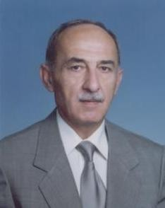
Öğr. Gör. Dr.
Fuat Kavukçu
Uludağ Üniversitesi · 1 eser
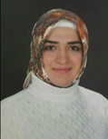
Arş. Gör.
Gülten Çam
Kırklareli Üniversitesi
Dr. Öğr. Üyesi
Gülşen Yağır Ahmetoğlu
Kırıkkale Üniversitesi
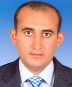
Doç. Dr.
Habib Kartaloğlu
Sakarya Üniversitesi
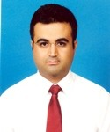
Doç. Dr.
Habip Demir
Hitit Üniversitesi
Yüksek Lisans Öğrencisi
Hacer Tuna
İstanbul Üniversitesi